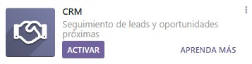

Pasos para configurar un módulo en Odoo
Sigue los pasos detallados a continuación para instalar y activar un módulo en Odoo:
1. Iniciar sesión en Odoo
Abre Odoo en tu navegador y utiliza tus credenciales para iniciar sesión.
2. Instalar el módulo CRM
Accede al menú de aplicaciones, busca "CRM" y haz clic en "Instalar".
3. Activar el modo desarrollador
Una vez instalado el CRM, ve a "Ajustes", baja hasta el final de la página y selecciona "Activar modo desarrollador (con activos)".
4. Descargar un módulo desde la web de addons
Accede a la web de addons de Odoo, selecciona un módulo y descárgalo en tu equipo.
5. Copiar el módulo en la carpeta de addons
Extrae el contenido del archivo descargado y copia la carpeta del módulo en la ruta de addons de tu instalación de Odoo.
6. Recargar la lista de aplicaciones
En Odoo, ve al menú de aplicaciones y selecciona "Actualizar lista de aplicaciones".
7. Activar el módulo
Busca el nombre del módulo en la lista de aplicaciones y haz clic en "Instalar". Una vez instalado, verifica que el módulo funciona correctamente.